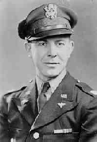

|
|
|
|
|
|
 Col. Lawrence Sylvester ALBRECHT (1917-1983) |
Col. Lawrence Sylvester ALBRECHT
• Census: 1920, 9 Jan 1920, Pittsburgh, Allegheny, PA. 4 • Census: 1930, 3 Apr 1930, Mt. Oliver, Allegheny, PA. 5 • Census: 1940, 8 Apr 1940, Pittsburgh, Allegheny, PA. 6 • College: Duquesne University: Pittsburgh, Allegheny, PA. 7 • Military Service: Army, 28 Jun 1940-12 Jan 1946. • Military Service, 24 Jul 1947-30 Jun 1967. 7 Larry was stationed in West Berlin with his family during the Cold War. Lawrence married Ruth Magdeline WEET, daughter of Herbert Peter WEET Sr. and Lydia McBeth ELDRIDGE, on 2 Jun 1941 in Pittsburgh, Allegheny, PA.1 2 (Ruth Magdeline WEET was born on 22 Feb 1921 in Pittsburgh, Allegheny, PA 8 and died on 4 Mar 2017 in Lansdale, Montgomery, PA 9.) |
1 Pennsylvania, Various County Courthouses, Pennsylvania County Marriages, 1885-1950 (Pennsylvania (via FamilySearch)).
2 Pittsburgh Post-Gazette, Weet-Albrecht Wedding Date (Pittsburgh, PA, 20 May 1941).
3 Social Security Administration, Death Master File (http://www.ancestry.com/search/rectype/vital/ssdi/main.htm).
4 Pennsylvania, Allegheny County, 1920 U.S. Census, Population Schedule (Washington, D.C., National Archives and Records Administration), ED 767, Sheet 12, Line 46.
5 Pennsylvania, Allegheny County, 1930 U.S. Census, Population Schedule (Washington, D.C., National Archives and Records Administration), ED 2-716, Sheet 3, Line 7.
6 Pennsylvania, Allegheny County, 1940 U.S. Census, Population Schedule (Washington, D.C., National Archives and Records Administration), ED 69-502, Sheet 5, Line 65.
7 Thomas Hoey, Oral Interview of Rosemary Weet Hoey (Pittsburgh, PA).
8 James Albrecht, Letter to Thomas Hoey (Lansdale, PA, 5 Nov 2000).
9 The Reporter, Ruth (Weet) Albrecht Obituary (Lansdale, PA, 6 Mar 2017).